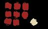
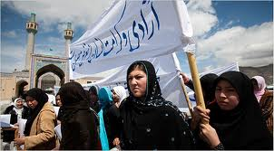
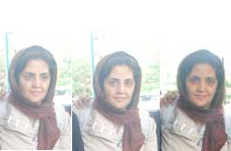
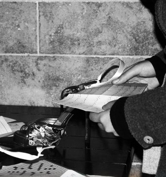

تغییر برای برابری
تغییر برای برابریجامعه ی ایرانی توانست به ایجاد وضعیت واقعی استثنایی دست بزند. وضعیتی که این بار خالق اش ستم دیده گان و ستم بران بودند نه ستم گران. این جنبش شباهت های آشکاری به جنبش زنان و به ویژه ساختار بی ساختار و غیر متمرکز و غیر خطی و طولی کمپین یک میلیون امضا داشت.خلق چنین جنبشی که توان ایجاد وضعیت استثنایی واقعی را داشته باشد تنها از ساختار و محتوایی که باور به برابری داشته و «علیه تبعیض» باشد، بر می آید
پذيرش > واژه كليدها > صفحه بندی > ستون وسط
ستون وسط
مقالهها
-
فمینیسم و وضعیت استثنایی، برای 3سال کمپین یک میلیون امضا / شهاب الدین شیخی
3 سپتامبر 2009, بوسيلهى pari -
 وقتی سکوت جایز نیست ؛مرکز کمک به قربانیان خشونت جنسی
وقتی سکوت جایز نیست ؛مرکز کمک به قربانیان خشونت جنسی
18 اوت 2010سی می له لا (Simelela) مرکزی است شبانه روزی برای عرضه ی خدمات و کمک های لازم به قربانیان خشونت جنسی در کیپ تاونِ آفریقای جنوبی. این مرکز با همکاری برخی سازمان های بهداشتی، پلیس و سازمان توسعه اجتماعی به منظور کمک به بهبود فیزیکی و بازپروری روحی قربانیان، در شهریور 2003 تاسیس شد...
-
 کمپین حول برابری جنسیتی/ آصف بیات
کمپین حول برابری جنسیتی/ آصف بیات
6 سپتامبر 2009, بوسيلهى pariهرچند مهم است که فعالان زنان ( درست مانند فعالان دانشجویی یا سندیکاهای کارگری) در معنای وسیع سیاسی فکر کنند و خود را جزئی جدایی ناپذیر از مبارزۀ فعلی برای دستیابی به شهروندی بدانند اما آنها باید در درجۀ اول بر محدودۀ فعالیتهای خود تمرکز کنند: کمپین حول برابری جنسیتی
-
 درباره طرح جمعیت و تعالی خانواده / زهره ارزنی
درباره طرح جمعیت و تعالی خانواده / زهره ارزنی
10 دسامبر 2013هنگامی که این طرح را مطالعه می کنید، کاملا متوجه می شوید که تدوین کنندگان این طرح، مساله اقتصادی را مهمترین عامل کاهش رشد جمعیت در نظر گرفته اند و این موضوع در خیلی از مواد تنظیمی کاملا مشهود است . با این تصور که وقتی مشکل اقتصادی خانواده ها رفع شود، دیگر مشکلی در مورد عدم فرزندآوری خانواده ها باقی نمی ماند، موادی تنظیم شده که خیلی از امکانات کشور در اختیار افراد متاهل بخصوص فرزند آور قرار گیرد. در صورتی که مسائل دیگری در بحث عدم ازدواج، تدوام نداشتن خانواده و همچنین رغبت نداشتن افراد به بچه دار شدن، دخالت دارد که با توجه به تجربه کاری ام به مواردی از آن اشاره می می کنم .
-
 جایگاه مردان در جنبش برابری خواهانه زنان / عذرا آزری
جایگاه مردان در جنبش برابری خواهانه زنان / عذرا آزری
4 مه 2013مبارزات برابری خواهانه زنان تاکنون تغییرات عمیقی در ساختارهای اجتماعی جوامع بشری رخ داده است. زنان توانسته اند در سایه مبارزاتشان به موقعیت نسبتا برابر در برخی جوامع دست یابند. به جرات می توان گفت که مبارزات برابری طلبی زنان موفق ترین جنبش ها در قرن نوزدهم و بیستم به حساب می آید...
-

جنبش زنان، بحران كنوني و راهكارهايي براي گذر از آن/ فرشاد صدوقيان
25 اوت 2009, بوسيلهى pariپيش از بررسي انتقادي جنبش زنان در دوره اخير، ارائه تحليل و راهكاري براي شرايط فعلي ممكن نيست، در بخش نخست مقاله، سعي خواهد شد چگونگي حضور زنان در رويدادهاي اخير، و در بخش دوم، بر پايه دركي كه از نقاط قوت و ضعف اين حضور و دلايل آن به دست آورديم، سعي خواهد شد راهكارهايي عمومي براي پيشبرد جنبش زنان ارائه گردد.
-

افزایش خشونت علیه زنان افغانی حتی پس از مرگ بن لادن
22 ژوئن 2011به گزارش کمیسیون مستقل دفاع از حقق بشر افغانستان خشونت علیه زنان و دختران افزایش می بابد. 2765 مورد خشونت طی سال گذشته گزارش شده است. 144 مورد خود سوزی، 261 خودکشی نا موفق، 237 ازدواج اجباری، 538 ضرب و جرح و 45 مورد قتل. 75 نفرجان خود را از دست دادند، 20 زن در اثر خودسوزی دچار نقص عضو شدند و 22 نفر پس از مراقبتهای درمانی بهبود یافتند.
-
فریبرز رئیس دانا: آنان که می گویند سوسیالیست ها کور جنس هستند، کور بشرند
4 سپتامبر 2010این طبیعی است که هر جریان اجتماعی که پا می گیرد، باید مطالبات بیکاران و زنان خانواده های بیکار و زنان کارگر و .... را در شعارهای خود قرار دهد. گمان من این بود که این نقطه شروع است و قرار است ما به دستاوردهای بزرگ تر و ریشه ای تر و عمیق تری برسیم. نه آن که از قدرت پناه بجوییم. امید من این بود که در طول راه ما به سمتی برویم که تنها رضایت زنان مرفه و روشنفکر وابسته به تفکر نئولیبرالی جبران نشود. بلکه مسائل را در سطح مردم بیاورد، که نشد. من نمی دانم که چه تعصبی به نام کمپین یک میلیون امضا وجود دارد. کمپین امروز و در این مقطع تاریخی باید نامی بر خود بگذارد، که هیچ رسانه ای متعلق به سرمایه داری جهانی نتواند و نخواهد که از آن اسم بهره ای ببرد. کمپین باید مسیر جدیدی را آغاز کند با حرف هایی تازه و با سازماندهی دیگری...
-

محبوبه کرمی: خوشحالم برای هدفم که برابری برای زنان سرزمینم است به زندان میروم
16 مه 2011محبوبه کرمی، از فعالین حقوق زنان و حقوق بشر، به رغم افسردگی حاد، به رغم داشتن پدری آلزایمری و سالخورده، برای اجرای حکم زندان احضار شد. تصور می کردیم به خاطر وضعیت جسمی و روحی خودش و پدرش زمان اجرای حکم را به تاخیر اندازند اما چنین نشد. صبح روز 25 اردیبهشت ماه خودش را به زندان اوین معرفی کرد و انتظار ما برای بازگشت او بیهوده بود...
-

چشمها گاهی بهتر می شنوند
30 نوامبر 2010آدمها حالات عجیبی دارند! گاه فقط گوشهایشان برای شنیدن کافی نیست. انگار گوشها پس از مدتی به ارتعاشات صدا عادت می کنند و دیگر حساس نمی شوند به برخی حروف, برخی کلمات. حالا هر چه می خواهی فریاد بزن. صدایت گم می شود در تکرارها و فریادها و فرکانسها..
0 | ... | 10 | 20 | 30 | 40 | 50 | 60 | 70 | 80 | 90 | ... | 450